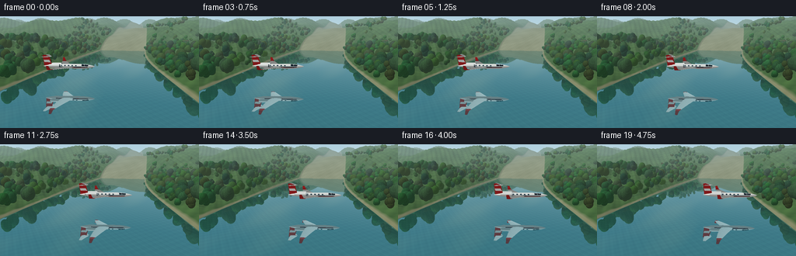
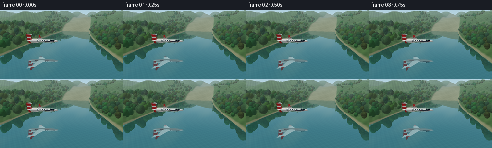

CODING AGENTS AS PIXEL WORLD MODELS
traex/GPT-6.1-Sol · phygen_058
点击播放 · 原生 RGB 像素
逐轮保存的候选
回放视频、检查图与代码变化。
每份候选均可单独播放。实际图片检查记录在下方工具轨迹中。
候选 01播放与检查图
点击播放 · 原生 RGB 像素


展开代码变化
--- 上一保存版本
+++ 本次保存版本
@@ -0,0 +1,414 @@
+"""Procedural RGB rendering: a small jet and its geometric river reflection.
+No source images, models, or external rendering packages are used.
+"""
+from pathlib import Path
+import json, math
+import numpy as np
+from PIL import Image, ImageDraw, ImageFilter
+import artifact_io
+
+ROOT = Path(__file__).resolve().parent
+SPEC = json.loads((ROOT/'task_spec.json').read_text())
+S = 3
+W,H = SPEC['width']*S,SPEC['height']*S
+rng = np.random.default_rng(58413)
+CAM = np.array([8.,10.,33.])
+TARGET = np.array([0.,2.,-3.])
+F = 239.*S
+forward = TARGET-CAM; forward /= np.linalg.norm(forward)
+right = np.cross(forward,[0.,1.,0.]); right /= np.linalg.norm(right)
+up = np.cross(right,forward)
+Y,X = np.mgrid[:H,:W]
+D = forward[None,None,:] + ((X+.5-W/2)/F)[...,None]*right - ((Y+.5-H/2)/F)[...,None]*up
+D /= np.linalg.norm(D,axis=-1,keepdims=True)
+LIGHT = np.array([-0.45,0.80,0.38]); LIGHT /= np.linalg.norm(LIGHT)
+
+
+def noise(x,z):
+ return (.45*np.sin(x*.33+np.sin(z*.16)*2.1)*np.sin(z*.27-.5)
+ +.25*np.sin(x*.89+z*.56)*np.sin(z*.91-x*.16)
+ +.16*np.sin(x*2.1+z*1.53)+.08*np.sin(x*4.6-z*3.2))
+
+def channel(z):
+ return 2.1*np.sin(z*.021)+1.0*np.sin(z*.051), 15.5+.045*z+1.1*np.sin(z*.035)
+
+def landheight(x,z):
+ center,width=channel(z)
+ edge=np.maximum(np.abs(x-center)-width,0.)
+ bank=.25*(1-np.exp(-edge*2.0))
+ hills=(1-np.exp(-edge*.085))*(4.3+2.0*np.sin(x*.063+z*.077)+1.5*np.sin(z*.135+x*.037))
+ texture=(1-np.exp(-edge*.5))*(.36*noise(x,z)+.18*np.sin(x*1.7-z*1.1))
+ distant=np.maximum(-z-68,0)
+ ridge=(1-np.exp(-distant*.025))*(12.+7.*np.sin(x*.034+z*.022)**2+4.*np.sin(x*.081-z*.042)**2)
+ return np.maximum(0,bank+hills+texture+ridge)
+
+
+def sky(d):
+ t=np.clip(d[...,1]*2.6+.08,0,1)
+ base=(1-t[...,None])*np.array([202.,224.,228.])+t[...,None]*np.array([105.,166.,207.])
+ # Transparent, feathered high cirrus, kept quiet above the landscape.
+ u=d[...,0]/np.maximum(d[...,1]+.21,.06)
+ v=d[...,2]/np.maximum(d[...,1]+.21,.06)
+ n=(np.sin(u*3.1+v*1.5)+.55*np.sin(u*6.2-v*3.3)+.23*np.sin(u*15+v*7))
+ cloud=np.clip((n-.42)*.23,0,.27)*np.clip(d[...,1]*4,0,1)
+ base=base*(1-cloud[...,None])+np.array([247.,245.,234.])*cloud[...,None]
+ return base
+
+
+def environment(origin,directions,tstart=None,water=True):
+ shape=directions.shape[:2]
+ depth=np.full(shape,np.inf)
+ if tstart is None: tstart=np.full(shape,.05)
+ last=tstart.copy()
+ # March from the ray's above-water start to the mountain horizon.
+ steps=np.r_[np.linspace(.15,70,90),np.geomspace(72,480,56)]
+ for dist in steps:
+ t=tstart+dist
+ p=origin+directions*t[...,None]
+ h=landheight(p[...,0],p[...,2])
+ hit=(p[...,1]<=h)&np.isinf(depth)
+ if not water: hit &= (h>.025)
+ if np.any(hit):
+ lo=last[hit].copy(); hi=t[hit].copy(); dd=directions[hit]
+ for _ in range(7):
+ mid=(lo+hi)*.5
+ pos=origin+dd*mid[:,None]
+ under=pos[:,1]<=landheight(pos[:,0],pos[:,2])
+ hi=np.where(under,mid,hi); lo=np.where(under,lo,mid)
+ depth[hit]=(lo+hi)*.5
+ last=t
+ col=sky(directions)
+ valid=np.isfinite(depth)
+ p=origin+directions*np.where(valid,depth,0)[...,None]
+ hh=landheight(p[...,0],p[...,2])
+ iswater=valid&(hh<.03) if water else np.zeros(shape,bool)
+ ground=valid&~iswater
+ if np.any(ground):
+ x,z=p[...,0],p[...,2]
+ n=noise(x,z)
+ center,width=channel(z)
+ edge=np.abs(x-center)-width
+ dhx=(landheight(x+.13,z)-landheight(x-.13,z))/.26
+ dhz=(landheight(x,z+.13)-landheight(x,z-.13))/.26
+ norm=np.stack([-dhx,np.ones(shape),-dhz],-1)
+ norm/=np.linalg.norm(norm,axis=-1,keepdims=True)
+ lighting=np.clip(norm@LIGHT,0,1)*.37+.58
+ color=np.empty((*shape,3))
+ color[:]=np.array([66.,102.,55.])
+ color+=n[...,None]*np.array([16.,20.,9.])
+ # Fine moist sand and stone margin between forest and glassy water.
+ shore=np.clip((.9-edge)*2,0,1)
+ sand=np.array([141.,143.,106.])+n[...,None]*12
+ color=color*(1-shore[...,None])+sand*shore[...,None]
+ far=np.clip((-z-75)/120,0,1)
+ color=color*(1-far[...,None]*.5)+np.array([88.,114.,111.])*far[...,None]*.5
+ color*=lighting[...,None]
+ fog=1-np.exp(-np.maximum(depth-20,0)*.0039)
+ fogcol=np.array([181.,207.,210.])
+ color=color*(1-fog[...,None])+fogcol*fog[...,None]
+ col[ground]=color[ground]
+ return col,depth,iswater
+
+
+def project(p):
+ rel=np.asarray(p)-CAM
+ zz=rel@forward
+ return np.stack([W/2+F*(rel@right)/zz,H/2-F*(rel@up)/zz,zz],-1)
+
+# Forest objects are analytic ellipsoids with leaf-scale texture.
+trees=[]
+for _ in range(960):
+ z=rng.uniform(-116,45)
+ center,width=channel(z)
+ side=1 if rng.random()<.5 else -1
+ x=center+side*(width+rng.uniform(.6,27))
+ h=float(landheight(x,z))
+ if z < -73 and rng.random()<.58: continue
+ ht=rng.uniform(1.5,3.8)*(1 if z>-65 else .85)
+ hue=np.array([rng.uniform(31,58),rng.uniform(66,99),rng.uniform(31,51)])
+ # Multiple asymmetric crowns avoid a repeated single-sphere appearance.
+ for j in range(4):
+ offset=rng.normal(0,.27,3); offset[1]*=.7
+ c=np.array([x,h+ht*.58+j*.18,z])+offset
+ r=np.array([ht*.30,ht*.35,ht*.30])*rng.uniform(.82,1.12)
+ trees.append((c,r,hue*rng.uniform(.92,1.08),float(rng.uniform(0,20))))
+
+
+def render_trees(col,depth,reflected=False,mask=None):
+ origin=CAM.copy(); dd=D.copy()
+ if reflected:
+ origin[1]*=-1; dd[...,1]*=-1
+ for c,r,base,seed in trees:
+ cp=c.copy()
+ if reflected: cp[1]*=-1
+ pp=project(cp)
+ if pp[2]<.2: continue
+ rad=F*np.max(r)/pp[2]*1.25
+ x0=max(0,int(pp[0]-rad)); x1=min(W,int(pp[0]+rad)+2)
+ y0=max(0,int(pp[1]-rad)); y1=min(H,int(pp[1]+rad)+2)
+ if x1<=x0 or y1<=y0: continue
+ if mask is not None and not np.any(mask[y0:y1,x0:x1]): continue
+ dr=dd[y0:y1,x0:x1]/r
+ oc=(origin-c)/r
+ a=np.sum(dr*dr,axis=-1); b=np.sum(dr*oc,axis=-1)
+ cc=np.sum(oc*oc)-1
+ disc=b*b-a*cc
+ t=(-b-np.sqrt(np.maximum(disc,0)))/a
+ ok=(disc>0)&(t>0)&(t<depth[y0:y1,x0:x1])
+ if mask is not None: ok &= mask[y0:y1,x0:x1]
+ if not np.any(ok): continue
+ hit=origin+dd[y0:y1,x0:x1]*t[...,None]
+ normal=(hit-c)/(r*r)
+ normal/=np.maximum(np.linalg.norm(normal,axis=-1,keepdims=True),1e-8)
+ light=.54+.51*np.maximum(normal@LIGHT,0)
+ # Leaf clusters and small canopy gaps with coherent world-space detail.
+ leaves=(np.sin(hit[...,0]*14+seed)*np.sin(hit[...,2]*17+hit[...,1]*11)
+ +.5*np.sin(hit[...,1]*32-hit[...,0]*23+seed))
+ light*=1+leaves*.10
+ shade=base*light[...,None]
+ fog=1-np.exp(-np.maximum(t-20,0)*.0039)
+ shade=shade*(1-fog[...,None])+np.array([181.,207.,210.])*fog[...,None]
+ dest=col[y0:y1,x0:x1]; dest[ok]=shade[ok]
+ dz=depth[y0:y1,x0:x1]; dz[ok]=t[ok]
+
+
+def make_background():
+ col,depth,water=environment(CAM,D)
+ render_trees(col,depth,False,~water)
+ tplane=np.where(D[...,1]<-.0001,-CAM[1]/D[...,1],0)
+ c2=CAM.copy(); c2[1]*=-1
+ d2=D.copy(); d2[...,1]*=-1
+ reflection,rd,_=environment(c2,d2,np.maximum(tplane,0)+.015,False)
+ render_trees(reflection,rd,True,water)
+ point=CAM+D*tplane[...,None]
+ px,pz=point[...,0],point[...,2]
+ # Deep transparent green water: reflection plus faint, submerged gravel.
+ gravel=(np.sin(px*4.8+pz*.3)*np.sin(pz*4.3-px*.6)+.4*np.sin(px*11-pz*9))
+ clear=np.array([36.,95.,92.])+gravel[...,None]*np.array([2.5,4.,3.])
+ fresnel=.035+.965*(1-np.abs(D[...,1]))**5
+ reflectance=np.clip(.28+fresnel*.72,.28,.9)
+ watercol=reflection*reflectance[...,None]+clear*(1-reflectance[...,None])
+ # Tiny distant glints, never a wake; the central reflection stays crisp.
+ glint=np.sin(pz*3.2+px*.035)**28*np.sin(px*1.7)**12
+ glint*=np.clip((np.abs(px)-6)/12,0,1)*1.3
+ watercol+=glint[...,None]
+ col[water]=watercol[water]
+ # The z-buffer is measured along forward, as used by the mesh rasterizer.
+ zbuffer=depth*(D@forward)
+ return np.clip(col,0,255),zbuffer,water,reflectance
+
+# Simple triangle mesh with smooth surface normals and matte/metallic lighting.
+mesh=[]
+def triangle(a,b,c,color,normals=None,shine=.12):
+ p=np.array([a,b,c],float)
+ if normals is None:
+ n=np.cross(p[1]-p[0],p[2]-p[0]); n/=max(np.linalg.norm(n),1e-10)
+ normals=np.tile(n,(3,1))
+ mesh.append((p,np.asarray(normals),np.asarray(color,float),shine))
+def quad(a,b,c,d,color,shine=.12):
+ triangle(a,b,c,color,shine=shine); triangle(a,c,d,color,shine=shine)
+
+def body_radius(x):
+ return np.interp(x,RINGS,RADII)
+RINGS=np.array([-4.9,-4.5,-3.7,-2.6,-1.,1.,2.4,3.25,4.,4.6,5.,5.25,5.4])
+RADII=np.array([.035,.16,.31,.41,.48,.51,.52,.49,.405,.29,.18,.09,.008])
+WHITE=[225,229,226]; NAVY=[30,54,69]; RED=[176,34,35]
+
+def fuselage():
+ segments=48
+ points=[]; normals=[]
+ for i,(x,r) in enumerate(zip(RINGS,RADII)):
+ slope=(RADII[min(i+1,len(RADII)-1)]-RADII[max(i-1,0)])/(RINGS[min(i+1,len(RADII)-1)]-RINGS[max(i-1,0)])
+ theta=np.arange(segments)*2*np.pi/segments
+ p=np.stack([np.full(segments,x),r*np.cos(theta)*.92,r*np.sin(theta)],-1)
+ n=np.stack([np.full(segments,-slope),np.cos(theta)/.92,np.sin(theta)],-1)
+ n/=np.linalg.norm(n,axis=-1,keepdims=True)
+ points.append(p); normals.append(n)
+ for i in range(len(RINGS)-1):
+ for j in range(segments):
+ k=(j+1)%segments
+ col=WHITE
+ angle=(j+.5)*2*np.pi/segments
+ if -3.7<RINGS[i]<4.0:
+ if 1.54<angle<1.77 or 4.52<angle<4.75: col=NAVY
+ if 1.77<angle<1.91 or 4.37<angle<4.52: col=RED
+ p=[points[i][j],points[i+1][j],points[i+1][k],points[i][k]]
+ n=[normals[i][j],normals[i+1][j],normals[i+1][k],normals[i][k]]
+ triangle(p[0],p[1],p[2],col,[n[0],n[1],n[2]],.32)
+ triangle(p[0],p[2],p[3],col,[n[0],n[2],n[3]],.32)
+ # Six recessed dark cabin windows on each side, conforming to the barrel.
+ for side in [-1,1]:
+ for x in [-2.6,-1.88,-1.16,-.44,.28,1.0,1.72]:
+ pts=[]
+ for a in np.linspace(0,2*np.pi,17)[:-1]:
+ xx=x+.165*np.cos(a); yy=.21+.112*np.sin(a)
+ rr=body_radius(xx)
+ zz=side*np.sqrt(max(rr*rr-(yy/.92)**2,.001))
+ pts.append([xx,yy,zz+side*.012])
+ center=np.mean(pts,axis=0)
+ for j in range(len(pts)):
+ triangle(center,pts[j],pts[(j+1)%len(pts)],[23,47,62],shine=.5)
+ # Black-blue flight-deck glazing follows the taper, split by pale frames.
+ for xa,xb in [(2.85,3.38),(3.43,4.12)]:
+ angles=[.46,.72,1.04,1.25]
+ for a,b in zip(angles[:-1],angles[1:]):
+ def p(x,t):
+ r=body_radius(x)+.014
+ return [x,r*np.cos(t)*.92,side*r*np.sin(t)]
+ quad(p(xa,a),p(xb,a),p(xb,b),p(xa,b),[25,52,69],.6)
+
+
+def wing(side,tail=False):
+ if not tail:
+ spans=[.38,.9,2.9,4.8,5.35]
+ leads=[1.05,.85,-.3,-1.35,-1.65]
+ chords=[2.3,2.4,1.75,1.02,.70]
+ heights=[-.13,-.10,.06,.25,.33]
+ else:
+ spans=[.12,.55,1.65,2.13]
+ leads=[-3.15,-3.3,-4.03,-4.33]
+ chords=[1.50,1.38,.81,.51]
+ heights=[1.91,1.92,2.02,2.08]
+ us=np.array([0,.045,.15,.34,.6,.86,1])
+ layers=[]
+ for sign in [1,-1]:
+ strip=[]
+ for zz,lead,chord,hh in zip(spans,leads,chords,heights):
+ section=[]
+ for u in us:
+ thickness=(.045 if tail else .054)*chord*np.sin(np.pi*u)**.65
+ section.append([lead-u*chord,hh+sign*thickness,side*zz])
+ strip.append(np.array(section))
+ layers.append(strip)
+ for j in range(len(spans)-1):
+ col=WHITE if j<len(spans)-2 or tail else RED
+ for k in range(len(us)-1):
+ a,b,c,d=strip[j][k],strip[j+1][k],strip[j+1][k+1],strip[j][k+1]
+ if side*sign<0: a,b,c,d=d,c,b,a
+ quad(a,b,c,d,col,.26)
+ # Close the wing tips and give the main wings small upturned red winglets.
+ top,bottom=layers
+ for k in range(len(us)-1):
+ quad(top[-1][k],bottom[-1][k],bottom[-1][k+1],top[-1][k+1],RED if not tail else WHITE)
+ if not tail:
+ z=side*spans[-1]; h=heights[-1]
+ quad([-1.65,h,z],[-1.99,h+.70,z+side*.15],[-2.42,h+.69,z+side*.15],[-2.35,h,z],RED,.25)
+
+
+def fin():
+ coords=[[-4.7,.09],[-3.18,.22],[-3.61,1.9],[-4.5,2.25],[-4.95,2.16]]
+ for side in [-1,1]:
+ pts=[[x,y,side*.055] for x,y in coords]
+ for j in range(1,len(pts)-1): triangle(pts[0],pts[j],pts[j+1],RED,shine=.24)
+ # White diagonal livery on the vertical stabilizer.
+ quad([-4.64,.77,side*.061],[-3.38,.77,side*.061],[-3.65,1.25,side*.061],[-4.8,1.25,side*.061],WHITE,.25)
+ for i in range(len(coords)):
+ j=(i+1)%len(coords)
+ a,b=coords[i],coords[j]
+ quad([a[0],a[1],-.055],[a[0],a[1],.055],[b[0],b[1],.055],[b[0],b[1],-.055],RED)
+
+
+def engine(side):
+ y=.21; z=side*.85
+ # Short faired pylons attaching the two aft engine nacelles.
+ quad([-2.5,.23,side*.36],[-1.67,.23,side*.38],[-1.78,.25,side*.84],[-2.7,.25,side*.86],WHITE)
+ xs=[-3.63,-3.48,-3.12,-1.85,-1.47,-1.36]
+ rs=[.19,.26,.34,.345,.32,.30]
+ seg=32
+ for j in range(len(xs)-1):
+ for k in range(seg):
+ a=k*2*np.pi/seg; b=(k+1)*2*np.pi/seg
+ ps=[]; ns=[]
+ for x,r,t in [(xs[j],rs[j],a),(xs[j+1],rs[j+1],a),(xs[j+1],rs[j+1],b),(xs[j],rs[j],b)]:
+ ps.append([x,y+r*np.cos(t),z+r*np.sin(t)])
+ ns.append([0,np.cos(t),np.sin(t)])
+ color=WHITE if j<4 else [169,181,186]
+ triangle(ps[0],ps[1],ps[2],color,ns[:3],.45)
+ triangle(ps[0],ps[2],ps[3],color,[ns[0],ns[2],ns[3]],.45)
+ for k in range(seg):
+ a=k*2*np.pi/seg; b=(k+1)*2*np.pi/seg
+ triangle([-1.375,y,z],[-1.375,y+.264*np.cos(a),z+.264*np.sin(a)],[-1.375,y+.264*np.cos(b),z+.264*np.sin(b)],[16,28,32],shine=.02)
+ triangle([-3.65,y,z],[-3.65,y+.15*np.cos(a),z+.15*np.sin(a)],[-3.65,y+.15*np.cos(b),z+.15*np.sin(b)],[35,39,40],shine=.03)
+ # Metallic central fan hub.
+ for k in range(12):
+ a=k*2*np.pi/12; b=(k+1)*2*np.pi/12
+ triangle([-1.30,y,z],[-1.38,y+.065*np.cos(a),z+.065*np.sin(a)],[-1.38,y+.065*np.cos(b),z+.065*np.sin(b)],[96,110,114],shine=.4)
+
+
+def build_plane():
+ fuselage(); wing(-1); wing(1); fin(); wing(-1,True); wing(1,True); engine(-1); engine(1)
+
+
+def raster_plane(position,heading,reflected=False):
+ zbuf=np.full((H,W),np.inf)
+ canvas=np.zeros((H,W,3),np.float64)
+ c,s=np.cos(heading),np.sin(heading)
+ rot=np.array([[c,0,-s],[0,1,0],[s,0,c]])
+ for verts,normal,base,shine in mesh:
+ world=verts@rot.T+position
+ normals=normal@rot.T
+ # Reflection shading is evaluated on the real, not inverted, aircraft.
+ tocam=CAM-world
+ if reflected:
+ tocam[:,1]=-CAM[1]-world[:,1]
+ tocam/=np.linalg.norm(tocam,axis=-1,keepdims=True)
+ lambert=np.maximum(normals@LIGHT,0)
+ halfv=tocam+LIGHT; halfv/=np.linalg.norm(halfv,axis=-1,keepdims=True)
+ spec=np.maximum(np.sum(normals*halfv,axis=-1),0)**35
+ bright=.59+.43*lambert
+ colors=base[None,:]*bright[:,None]+spec[:,None]*shine*100
+ if reflected: world[:,1]*=-1
+ p=project(world)
+ if np.any(p[:,2]<=.05): continue
+ x0=max(0,int(np.floor(p[:,0].min()))); x1=min(W,int(np.ceil(p[:,0].max()))+1)
+ y0=max(0,int(np.floor(p[:,1].min()))); y1=min(H,int(np.ceil(p[:,1].max()))+1)
+ if x1<=x0 or y1<=y0: continue
+ xx=X[y0:y1,x0:x1]+.5; yy=Y[y0:y1,x0:x1]+.5
+ a,b,c0=p
+ den=(b[1]-c0[1])*(a[0]-c0[0])+(c0[0]-b[0])*(a[1]-c0[1])
+ if abs(den)<1e-7: continue
+ u=((b[1]-c0[1])*(xx-c0[0])+(c0[0]-b[0])*(yy-c0[1]))/den
+ v=((c0[1]-a[1])*(xx-c0[0])+(a[0]-c0[0])*(yy-c0[1]))/den
+ w=1-u-v
+ invz=u/a[2]+v/b[2]+w/c0[2]
+ zz=1/np.maximum(invz,1e-10)
+ ok=(u>=-1e-6)&(v>=-1e-6)&(w>=-1e-6)&(zz<zbuf[y0:y1,x0:x1])
+ if not np.any(ok): continue
+ cc=(u[...,None]*colors[0]/a[2]+v[...,None]*colors[1]/b[2]+w[...,None]*colors[2]/c0[2])/invz[...,None]
+ dest=canvas[y0:y1,x0:x1]; dest[ok]=cc[ok]
+ zb=zbuf[y0:y1,x0:x1]; zb[ok]=zz[ok]
+ return canvas,zbuf
+
+
+def generate():
+ print('Rendering wooded river and mirrored landscape...',flush=True)
+ bg,depth,water,fresnel=make_background()
+ build_plane()
+ frames=[]
+ print('Aircraft mesh:',len(mesh),'triangles; rendering frames...',flush=True)
+ for i in range(SPEC['frames']):
+ t=i/(SPEC['frames']-1)
+ pos=np.array([-6.0+12.4*t,3.35+.035*np.sin(t*2*np.pi),-1.0-1.85*t])
+ # Constant heading, retracted undercarriage, smooth and level glide.
+ heading=-math.atan2(1.85,12.4)
+ frame=bg.copy()
+ reflection,rz=raster_plane(pos,heading,True)
+ hit=np.isfinite(rz)&water
+ # Glassy water produces a clearly identifiable but subdued optical image.
+ amount=np.clip(.48+fresnel*.42,.48,.80)
+ tinted=reflection*np.array([.89,.96,.98])
+ frame[hit]=frame[hit]*(1-amount[hit,None])+tinted[hit]*amount[hit,None]
+ plane,pz=raster_plane(pos,heading,False)
+ hit=np.isfinite(pz)&(pz<depth)
+ frame[hit]=plane[hit]
+ # Gentle photographic tonal roll-off, supersampled antialiasing.
+ frame=np.clip(frame,0,255).astype(np.uint8)
+ img=Image.fromarray(frame).resize((SPEC['width'],SPEC['height']),Image.Resampling.LANCZOS)
+ frames.append(np.asarray(img))
+ print('frame',i+1,flush=True)
+ frames=np.stack(frames).astype(np.uint8)
+ artifact_io.save(frames,ROOT)
+ print('Saved',frames.shape,flush=True)
+
+if __name__=='__main__':
+ generate()
可观测工具轨迹
实际执行的命令与返回图片。
命令 1exit 0
/bin/bash -lc "ls -la && cat prompt.txt && printf '\\n--- RULES ---\\n' && cat GENERATION_RULES.md && printf '\\n--- SPEC ---\\n' && cat task_spec.json"
命令 2exit 0
/bin/bash -lc 'cat artifact_io.py'
命令 3exit 0
/bin/bash -lc "cat > generate.py <<'PY'
\"\"\"Procedural RGB rendering: a small jet and its geometric river reflection.
No source images, models, or external rendering packages are used.
\"\"\"
from pathlib import Path
import json, math
import numpy as np
from PIL import Image, ImageDraw, ImageFilter
import artifact_io
ROOT = Path(__file__).resolve().parent
SPEC = json.loads((ROOT/'task_spec.json').read_text())
S = 3
W,H = SPEC['width']*S,SPEC['height']*S
rng = np.random.default_rng(58413)
CAM = np.array([8.,10.,33.])
TARGET = np.array([0.,2.,-3.])
F = 239.*S
forward = TARGET-CAM; forward /= np.linalg.norm(forward)
right = np.cross(forward,[0.,1.,0.]); right /= np.linalg.norm(right)
up = np.cross(right,forward)
Y,X = np.mgrid[:H,:W]
D = forward[None,None,:] + ((X+.5-W/2)/F)[...,None]*right - ((Y+.5-H/2)/F)[...,None]*up
D /= np.linalg.norm(D,axis=-1,keepdims=True)
LIGHT = np.array([-0.45,0.80,0.38]); LIGHT /= np.linalg.norm(LIGHT)
def noise(x,z):
return (.45*np.sin(x*.33+np.sin(z*.16)*2.1)*np.sin(z*.27-.5)
+.25*np.sin(x*.89+z*.56)*np.sin(z*.91-x*.16)
+.16*np.sin(x*2.1+z*1.53)+.08*np.sin(x*4.6-z*3.2))
def channel(z):
return 2.1*np.sin(z*.021)+1.0*np.sin(z*.051), 15.5+.045*z+1.1*np.sin(z*.035)
def landheight(x,z):
center,width=channel(z)
edge=np.maximum(np.abs(x-center)-width,0.)
bank=.25*(1-np.exp(-edge*2.0))
hills=(1-np.exp(-edge*.085))*(4.3+2.0*np.sin(x*.063+z*.077)+1.5*np.sin(z*.135+x*.037))
texture=(1-np.exp(-edge*.5))*(.36*noise(x,z)+.18*np.sin(x*1.7-z*1.1))
distant=np.maximum(-z-68,0)
ridge=(1-np.exp(-distant*.025))*(12.+7.*np.sin(x*.034+z*.022)**2+4.*np.sin(x*.081-z*.042)**2)
return np.maximum(0,bank+hills+texture+ridge)
def sky(d):
t=np.clip(d[...,1]*2.6+.08,0,1)
base=(1-t[...,None])*np.array([202.,224.,228.])+t[...,None]*np.array([105.,166.,207.])
# Transparent, feathered high cirrus, kept quiet above the landscape.
u=d[...,0]/np.maximum(d[...,1]+.21,.06)
v=d[...,2]/np.maximum(d[...,1]+.21,.06)
n=(np.sin(u*3.1+v*1.5)+.55*np.sin(u*6.2-v*3.3)+.23*np.sin(u*15+v*7))
cloud=np.clip((n-.42)*.23,0,.27)*np.clip(d[...,1]*4,0,1)
base=base*(1-cloud[...,None])+np.array([247.,245.,234.])*cloud[...,None]
return base
def environment(origin,directions,tstart=None,water=True):
shape=directions.shape[:2]
depth=np.full(shape,np.inf)
if tstart is None: tstart=np.full(shape,.05)
last=tstart.copy()
# March from the ray's above-water start to the mountain horizon.
steps=np.r_[np.linspace(.15,70,90),np.geomspace(72,480,56)]
for dist in steps:
t=tstart+dist
p=origin+directions*t[...,None]
h=landheight(p[...,0],p[...,2])
hit=(p[...,1]<=h)&np.isinf(depth)
if not water: hit &= (h>.025)
if np.any(hit):
lo=last[hit].copy(); hi=t[hit].copy(); dd=directions[hit]
for _ in range(7):
mid=(lo+hi)*.5
pos=origin+dd*mid[:,None]
under=pos[:,1]<=landheight(pos[:,0],pos[:,2])
hi=np.where(under,mid,hi); lo=np.where(under,lo,mid)
depth[hit]=(lo+hi)*.5
last=t
col=sky(directions)
valid=np.isfinite(depth)
p=origin+directions*np.where(valid,depth,0)[...,None]
hh=landheight(p[...,0],p[...,2])
iswater=valid&(hh<.03) if water else np.zeros(shape,bool)
ground=valid&~iswater
if np.any(ground):
x,z=p[...,0],p[...,2]
n=noise(x,z)
center,width=channel(z)
edge=np.abs(x-center)-width
dhx=(landheight(x+.13,z)-landheight(x-.13,z))/.26
dhz=(landheight(x,z+.13)-landheight(x,z-.13))/.26
norm=np.stack([-dhx,np.ones(shape),-dhz],-1)
norm/=np.linalg.norm(norm,axis=-1,keepdims=True)
lighting=np.clip(norm@LIGHT,0,1)*.37+.58
color=np.empty((*shape,3))
color[:]=np.array([66.,102.,55.])
color+=n[...,None]*np.array([16.,20.,9.])
# Fine moist sand and stone margin between forest and glassy water.
shore=np.clip((.9-edge)*2,0,1)
sand=np.array([141.,143.,106.])+n[...,None]*12
color=color*(1-shore[...,None])+sand*shore[...,None]
far=np.clip((-z-75)/120,0,1)
color=color*(1-far[...,None]*.5)+np.array([88.,114.,111.])*far[...,None]*.5
color*=lighting[...,None]
fog=1-np.exp(-np.maximum(depth-20,0)*.0039)
fogcol=np.array([181.,207.,210.])
color=color*(1-fog[...,None])+fogcol*fog[...,None]
col[ground]=color[ground]
return col,depth,iswater
def project(p):
rel=np.asarray(p)-CAM
zz=rel@forward
return np.stack([W/2+F*(rel@right)/zz,H/2-F*(rel@up)/zz,zz],-1)
# Forest objects are analytic ellipsoids with leaf-scale texture.
trees=[]
for _ in range(960):
z=rng.uniform(-116,45)
center,width=channel(z)
side=1 if rng.random()<.5 else -1
x=center+side*(width+rng.uniform(.6,27))
h=float(landheight(x,z))
if z < -73 and rng.random()<.58: continue
ht=rng.uniform(1.5,3.8)*(1 if z>-65 else .85)
hue=np.array([rng.uniform(31,58),rng.uniform(66,99),rng.uniform(31,51)])
# Multiple asymmetric crowns avoid a repeated single-sphere appearance.
for j in range(4):
offset=rng.normal(0,.27,3); offset[1]*=.7
c=np.array([x,h+ht*.58+j*.18,z])+offset
r=np.array([ht*.30,ht*.35,ht*.30])*rng.uniform(.82,1.12)
trees.append((c,r,hue*rng.uniform(.92,1.08),float(rng.uniform(0,20))))
def render_trees(col,depth,reflected=False,mask=None):
origin=CAM.copy(); dd=D.copy()
if reflected:
origin[1]*=-1; dd[...,1]*=-1
for c,r,base,seed in trees:
cp=c.copy()
if reflected: cp[1]*=-1
pp=project(cp)
if pp[2]<.2: continue
rad=F*np.max(r)/pp[2]*1.25
x0=max(0,int(pp[0]-rad)); x1=min(W,int(pp[0]+rad)+2)
y0=max(0,int(pp[1]-rad)); y1=min(H,int(pp[1]+rad)+2)
if x1<=x0 or y1<=y0: continue
if mask is not None and not np.any(mask[y0:y1,x0:x1]): continue
dr=dd[y0:y1,x0:x1]/r
oc=(origin-c)/r
a=np.sum(dr*dr,axis=-1); b=np.sum(dr*oc,axis=-1)
cc=np.sum(oc*oc)-1
disc=b*b-a*cc
t=(-b-np.sqrt(np.maximum(disc,0)))/a
ok=(disc>0)&(t>0)&(t<depth[y0:y1,x0:x1])
if mask is not None: ok &= mask[y0:y1,x0:x1]
if not np.any(ok): continue
hit=origin+dd[y0:y1,x0:x1]*t[...,None]
normal=(hit-c)/(r*r)
normal/=np.maximum(np.linalg.norm(normal,axis=-1,keepdims=True),1e-8)
light=.54+.51*np.maximum(normal@LIGHT,0)
# Leaf clusters and small canopy gaps with coherent world-space detail.
leaves=(np.sin(hit[...,0]*14+seed)*np.sin(hit[...,2]*17+hit[...,1]*11)
+.5*np.sin(hit[...,1]*32-hit[...,0]*23+seed))
light*=1+leaves*.10
shade=base*light[...,None]
fog=1-np.exp(-np.maximum(t-20,0)*.0039)
shade=shade*(1-fog[...,None])+np.array([181.,207.,210.])*fog[...,None]
dest=col[y0:y1,x0:x1]; dest[ok]=shade[ok]
dz=depth[y0:y1,x0:x1]; dz[ok]=t[ok]
def make_background():
col,depth,water=environment(CAM,D)
render_trees(col,depth,False,~water)
tplane=np.where(D[...,1]<-.0001,-CAM[1]/D[...,1],0)
c2=CAM.copy(); c2[1]*=-1
d2=D.copy(); d2[...,1]*=-1
reflection,rd,_=environment(c2,d2,np.maximum(tplane,0)+.015,False)
render_trees(reflection,rd,True,water)
point=CAM+D*tplane[...,None]
px,pz=point[...,0],point[...,2]
# Deep transparent green water: reflection plus faint, submerged gravel.
gravel=(np.sin(px*4.8+pz*.3)*np.sin(pz*4.3-px*.6)+.4*np.sin(px*11-pz*9))
clear=np.array([36.,95.,92.])+gravel[...,None]*np.array([2.5,4.,3.])
fresnel=.035+.965*(1-np.abs(D[...,1]))**5
reflectance=np.clip(.28+fresnel*.72,.28,.9)
watercol=reflection*reflectance[...,None]+clear*(1-reflectance[...,None])
# Tiny distant glints, never a wake; the central reflection stays crisp.
glint=np.sin(pz*3.2+px*.035)**28*np.sin(px*1.7)**12
glint*=np.clip((np.abs(px)-6)/12,0,1)*1.3
watercol+=glint[...,None]
col[water]=watercol[water]
# The z-buffer is measured along forward, as used by the mesh rasterizer.
zbuffer=depth*(D@forward)
return np.clip(col,0,255),zbuffer,water,reflectance
# Simple triangle mesh with smooth surface normals and matte/metallic lighting.
mesh=[]
def triangle(a,b,c,color,normals=None,shine=.12):
p=np.array([a,b,c],float)
if normals is None:
n=np.cross(p[1]-p[0],p[2]-p[0]); n/=max(np.linalg.norm(n),1e-10)
normals=np.tile(n,(3,1))
mesh.append((p,np.asarray(normals),np.asarray(color,float),shine))
def quad(a,b,c,d,color,shine=.12):
triangle(a,b,c,color,shine=shine); triangle(a,c,d,color,shine=shine)
def body_radius(x):
return np.interp(x,RINGS,RADII)
RINGS=np.array([-4.9,-4.5,-3.7,-2.6,-1.,1.,2.4,3.25,4.,4.6,5.,5.25,5.4])
RADII=np.array([.035,.16,.31,.41,.48,.51,.52,.49,.405,.29,.18,.09,.008])
WHITE=[225,229,226]; NAVY=[30,54,69]; RED=[176,34,35]
def fuselage():
segments=48
points=[]; normals=[]
for i,(x,r) in enumerate(zip(RINGS,RADII)):
slope=(RADII[min(i+1,len(RADII)-1)]-RADII[max(i-1,0)])/(RINGS[min(i+1,len(RADII)-1)]-RINGS[max(i-1,0)])
theta=np.arange(segments)*2*np.pi/segments
p=np.stack([np.full(segments,x),r*np.cos(theta)*.92,r*np.sin(theta)],-1)
n=np.stack([np.full(segments,-slope),np.cos(theta)/.92,np.sin(theta)],-1)
n/=np.linalg.norm(n,axis=-1,keepdims=True)
points.append(p); normals.append(n)
for i in range(len(RINGS)-1):
for j in range(segments):
k=(j+1)%segments
col=WHITE
angle=(j+.5)*2*np.pi/segments
if -3.7<RINGS[i]<4.0:
if 1.54<angle<1.77 or 4.52<angle<4.75: col=NAVY
if 1.77<angle<1.91 or 4.37<angle<4.52: col=RED
p=[points[i][j],points[i+1][j],points[i+1][k],points[i][k]]
n=[normals[i][j],normals[i+1][j],normals[i+1][k],normals[i][k]]
triangle(p[0],p[1],p[2],col,[n[0],n[1],n[2]],.32)
triangle(p[0],p[2],p[3],col,[n[0],n[2],n[3]],.32)
# Six recessed dark cabin windows on each side, conforming to the barrel.
for side in [-1,1]:
for x in [-2.6,-1.88,-1.16,-.44,.28,1.0,1.72]:
pts=[]
for a in np.linspace(0,2*np.pi,17)[:-1]:
xx=x+.165*np.cos(a); yy=.21+.112*np.sin(a)
rr=body_radius(xx)
zz=side*np.sqrt(max(rr*rr-(yy/.92)**2,.001))
pts.append([xx,yy,zz+side*.012])
center=np.mean(pts,axis=0)
for j in range(len(pts)):
triangle(center,pts[j],pts[(j+1)%len(pts)],[23,47,62],shine=.5)
# Black-blue flight-deck glazing follows the taper, split by pale frames.
for xa,xb in [(2.85,3.38),(3.43,4.12)]:
angles=[.46,.72,1.04,1.25]
for a,b in zip(angles[:-1],angles[1:]):
def p(x,t):
r=body_radius(x)+.014
return [x,r*np.cos(t)*.92,side*r*np.sin(t)]
quad(p(xa,a),p(xb,a),p(xb,b),p(xa,b),[25,52,69],.6)
def wing(side,tail=False):
if not tail:
spans=[.38,.9,2.9,4.8,5.35]
leads=[1.05,.85,-.3,-1.35,-1.65]
chords=[2.3,2.4,1.75,1.02,.70]
heights=[-.13,-.10,.06,.25,.33]
else:
spans=[.12,.55,1.65,2.13]
leads=[-3.15,-3.3,-4.03,-4.33]
chords=[1.50,1.38,.81,.51]
heights=[1.91,1.92,2.02,2.08]
us=np.array([0,.045,.15,.34,.6,.86,1])
layers=[]
for sign in [1,-1]:
strip=[]
for zz,lead,chord,hh in zip(spans,leads,chords,heights):
section=[]
for u in us:
thickness=(.045 if tail else .054)*chord*np.sin(np.pi*u)**.65
section.append([lead-u*chord,hh+sign*thickness,side*zz])
strip.append(np.array(section))
layers.append(strip)
for j in range(len(spans)-1):
col=WHITE if j<len(spans)-2 or tail else RED
for k in range(len(us)-1):
a,b,c,d=strip[j][k],strip[j+1][k],strip[j+1][k+1],strip[j][k+1]
if side*sign<0: a,b,c,d=d,c,b,a
quad(a,b,c,d,col,.26)
# Close the wing tips and give the main wings small upturned red winglets.
top,bottom=layers
for k in range(len(us)-1):
quad(top[-1][k],bottom[-1][k],bottom[-1][k+1],top[-1][k+1],RED if not tail else WHITE)
if not tail:
z=side*spans[-1]; h=heights[-1]
quad([-1.65,h,z],[-1.99,h+.70,z+side*.15],[-2.42,h+.69,z+side*.15],[-2.35,h,z],RED,.25)
def fin():
coords=[[-4.7,.09],[-3.18,.22],[-3.61,1.9],[-4.5,2.25],[-4.95,2.16]]
for side in [-1,1]:
pts=[[x,y,side*.055] for x,y in coords]
for j in range(1,len(pts)-1): triangle(pts[0],pts[j],pts[j+1],RED,shine=.24)
# White diagonal livery on the vertical stabilizer.
quad([-4.64,.77,side*.061],[-3.38,.77,side*.061],[-3.65,1.25,side*.061],[-4.8,1.25,side*.061],WHITE,.25)
for i in range(len(coords)):
j=(i+1)%len(coords)
a,b=coords[i],coords[j]
quad([a[0],a[1],-.055],[a[0],a[1],.055],[b[0],b[1],.055],[b[0],b[1],-.055],RED)
def engine(side):
y=.21; z=side*.85
# Short faired pylons attaching the two aft engine nacelles.
quad([-2.5,.23,side*.36],[-1.67,.23,side*.38],[-1.78,.25,side*.84],[-2.7,.25,side*.86],WHITE)
xs=[-3.63,-3.48,-3.12,-1.85,-1.47,-1.36]
rs=[.19,.26,.34,.345,.32,.30]
seg=32
for j in range(len(xs)-1):
for k in range(seg):
a=k*2*np.pi/seg; b=(k+1)*2*np.pi/seg
ps=[]; ns=[]
for x,r,t in [(xs[j],rs[j],a),(xs[j+1],rs[j+1],a),(xs[j+1],rs[j+1],b),(xs[j],rs[j],b)]:
ps.append([x,y+r*np.cos(t),z+r*np.sin(t)])
ns.append([0,np.cos(t),np.sin(t)])
color=WHITE if j<4 else [169,181,186]
triangle(ps[0],ps[1],ps[2],color,ns[:3],.45)
triangle(ps[0],ps[2],ps[3],color,[ns[0],ns[2],ns[3]],.45)
for k in range(seg):
a=k*2*np.pi/seg; b=(k+1)*2*np.pi/seg
triangle([-1.375,y,z],[-1.375,y+.264*np.cos(a),z+.264*np.sin(a)],[-1.375,y+.264*np.cos(b),z+.264*np.sin(b)],[16,28,32],shine=.02)
triangle([-3.65,y,z],[-3.65,y+.15*np.cos(a),z+.15*np.sin(a)],[-3.65,y+.15*np.cos(b),z+.15*np.sin(b)],[35,39,40],shine=.03)
# Metallic central fan hub.
for k in range(12):
a=k*2*np.pi/12; b=(k+1)*2*np.pi/12
triangle([-1.30,y,z],[-1.38,y+.065*np.cos(a),z+.065*np.sin(a)],[-1.38,y+.065*np.cos(b),z+.065*np.sin(b)],[96,110,114],shine=.4)
def build_plane():
fuselage(); wing(-1); wing(1); fin(); wing(-1,True); wing(1,True); engine(-1); engine(1)
def raster_plane(position,heading,reflected=False):
zbuf=np.full((H,W),np.inf)
canvas=np.zeros((H,W,3),np.float64)
c,s=np.cos(heading),np.sin(heading)
rot=np.array([[c,0,-s],[0,1,0],[s,0,c]])
for verts,normal,base,shine in mesh:
world=verts@rot.T+position
normals=normal@rot.T
# Reflection shading is evaluated on the real, not inverted, aircraft.
tocam=CAM-world
if reflected:
tocam[:,1]=-CAM[1]-world[:,1]
tocam/=np.linalg.norm(tocam,axis=-1,keepdims=True)
lambert=np.maximum(normals@LIGHT,0)
halfv=tocam+LIGHT; halfv/=np.linalg.norm(halfv,axis=-1,keepdims=True)
spec=np.maximum(np.sum(normals*halfv,axis=-1),0)**35
bright=.59+.43*lambert
colors=base[None,:]*bright[:,None]+spec[:,None]*shine*100
if reflected: world[:,1]*=-1
p=project(world)
if np.any(p[:,2]<=.05): continue
x0=max(0,int(np.floor(p[:,0].min()))); x1=min(W,int(np.ceil(p[:,0].max()))+1)
y0=max(0,int(np.floor(p[:,1].min()))); y1=min(H,int(np.ceil(p[:,1].max()))+1)
if x1<=x0 or y1<=y0: continue
xx=X[y0:y1,x0:x1]+.5; yy=Y[y0:y1,x0:x1]+.5
a,b,c0=p
den=(b[1]-c0[1])*(a[0]-c0[0])+(c0[0]-b[0])*(a[1]-c0[1])
if abs(den)<1e-7: continue
u=((b[1]-c0[1])*(xx-c0[0])+(c0[0]-b[0])*(yy-c0[1]))/den
v=((c0[1]-a[1])*(xx-c0[0])+(a[0]-c0[0])*(yy-c0[1]))/den
w=1-u-v
invz=u/a[2]+v/b[2]+w/c0[2]
zz=1/np.maximum(invz,1e-10)
ok=(u>=-1e-6)&(v>=-1e-6)&(w>=-1e-6)&(zz<zbuf[y0:y1,x0:x1])
if not np.any(ok): continue
cc=(u[...,None]*colors[0]/a[2]+v[...,None]*colors[1]/b[2]+w[...,None]*colors[2]/c0[2])/invz[...,None]
dest=canvas[y0:y1,x0:x1]; dest[ok]=cc[ok]
zb=zbuf[y0:y1,x0:x1]; zb[ok]=zz[ok]
return canvas,zbuf
def generate():
print('Rendering wooded river and mirrored landscape...',flush=True)
bg,depth,water,fresnel=make_background()
build_plane()
frames=[]
print('Aircraft mesh:',len(mesh),'triangles; rendering frames...',flush=True)
for i in range(SPEC['frames']):
t=i/(SPEC['frames']-1)
pos=np.array([-6.0+12.4*t,3.35+.035*np.sin(t*2*np.pi),-1.0-1.85*t])
# Constant heading, retracted undercarriage, smooth and level glide.
heading=-math.atan2(1.85,12.4)
frame=bg.copy()
reflection,rz=raster_plane(pos,heading,True)
hit=np.isfinite(rz)&water
# Glassy water produces a clearly identifiable but subdued optical image.
amount=np.clip(.48+fresnel*.42,.48,.80)
tinted=reflection*np.array([.89,.96,.98])
frame[hit]=frame[hit]*(1-amount[hit,None])+tinted[hit]*amount[hit,None]
plane,pz=raster_plane(pos,heading,False)
hit=np.isfinite(pz)&(pz<depth)
frame[hit]=plane[hit]
# Gentle photographic tonal roll-off, supersampled antialiasing.
frame=np.clip(frame,0,255).astype(np.uint8)
img=Image.fromarray(frame).resize((SPEC['width'],SPEC['height']),Image.Resampling.LANCZOS)
frames.append(np.asarray(img))
print('frame',i+1,flush=True)
frames=np.stack(frames).astype(np.uint8)
artifact_io.save(frames,ROOT)
print('Saved',frames.shape,flush=True)
if __name__=='__main__':
generate()
PY
OPENBLAS_NUM_THREADS=1 python generate.py"命令 4exit 0
/bin/bash -lc "python - <<'PY'
import numpy as np
from pathlib import Path
from PIL import Image
p=np.load('pixels.npz')['pixels']
print('RGB-packed tensor:',p.shape,p.dtype)
files=sorted(Path('frames').glob('*.png'))
print('Frames:',len(files),'size:',Image.open(files[0]).size)
print('Changed pixels per transition:',[int(np.sum(p[:,:,i]"'!=p[:,:,i-1])) for i in range(1,20)])
import generate as g
for t in [0,.5,1]:
pos=np.array([-6+12.4*t,3.35,-1-1.85*t])
ref=pos.copy();ref[1]*=-1
print('"'Screen coordinates aircraft / reflection:',g.project(pos)/np.array([3,3,1]),g.project(ref)/np.array([3,3,1]))
PY
command -v ffmpeg || true
ls -lh pixels.npz index.html inspection.png generate.py"保存候选 1 份；完成命令 4 次；可验证图片返回 0 张。原始 API 响应与完整日志保留在本地。